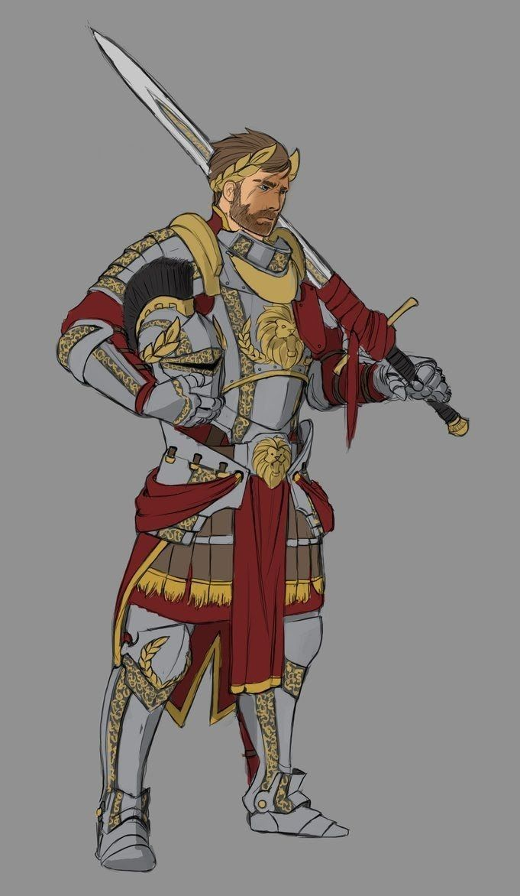
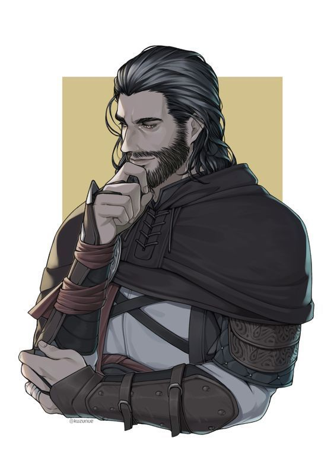
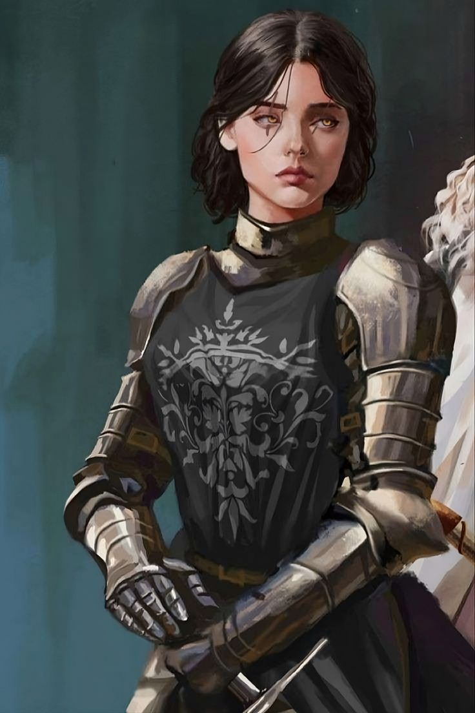

Основные персонажи, их роли, характеристики и уникальные черты.
| Имя | Роль | Год рождения | Характеристика | Изображение |
|---|---|---|---|---|
| Август фон Хофманн | Правитель / Магистр | 876 | Рациональный, дисциплинированный, стратегический ум. Иногда чрезмерно строг. |  |
| Арлекин де Хат | Глава разведки и исследований | 882 | Хитрый, дипломатичный, склонен к интригам, иногда ленив. |  |
| София Гуннхильдр | Глава отряда "Мертвая Голова" & Заместитель Магистра | 890 | Интеллектуальная, изобретательная, любознательная, порой забывает о практических деталях. |  |